A la izquierda, la pantalla de «Marca JUTRIP» de Design; a la derecha, la misma pantalla en la app (viaje de pruebas de Roma, 390 × 844). Hecha por scripts/destino/capturasMarca.mjs.
01 · Apertura
La de Design se repite en bucle y su frase es «TU APP DE VIAJES»; la nuestra sale una sola vez, dura 3 s y dice «De viajeros, para viajeros» (más larga, escrita más deprisa).
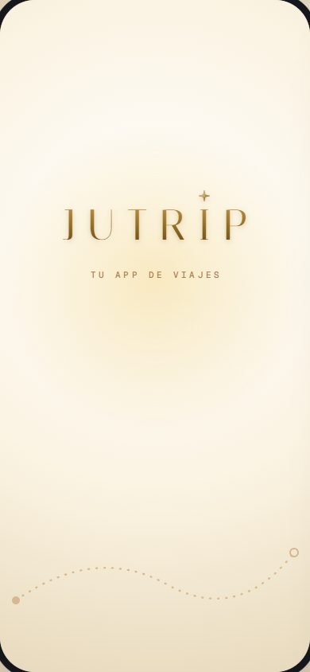
Design · Marca JUTRIP 01
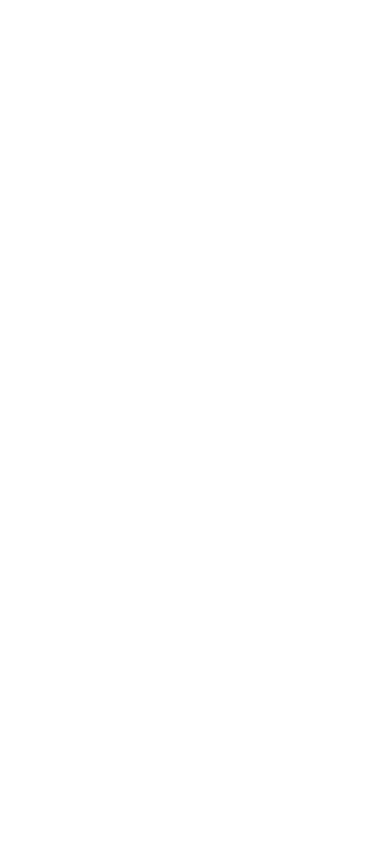
La app · 01a_apertura_logo_entrando
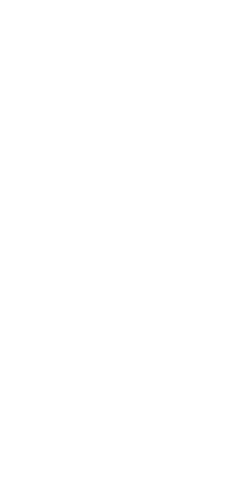
La app · 01b_apertura_frase_a_medias
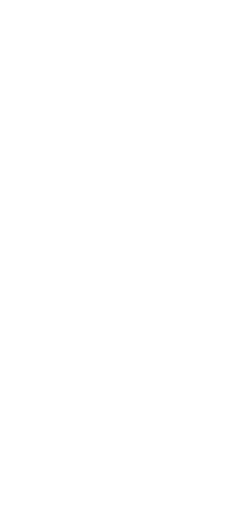
La app · 01c_apertura_final
02 · Entrar
Fondo blanco (decisión de Eric, no cambia); el logo nuevo arriba.
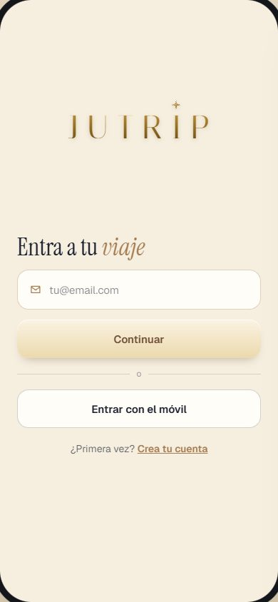
Design · Marca JUTRIP 02
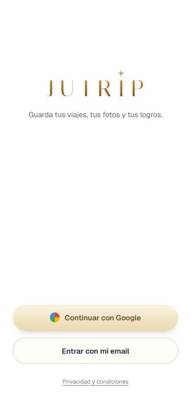
La app · 02_entrar
03 · HOY
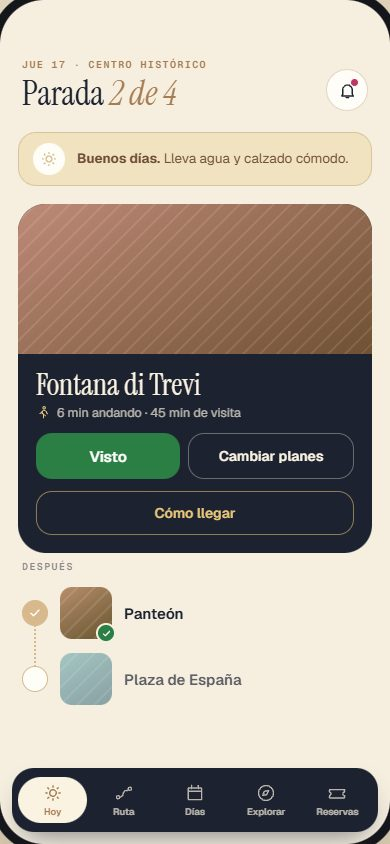
Design · Marca JUTRIP 03
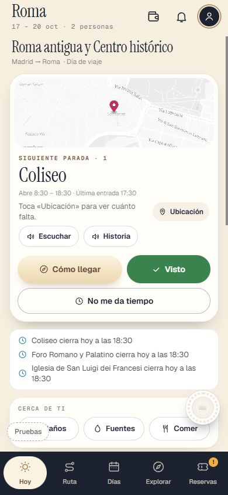
La app · 03_hoy
04 · Días, con un día abierto
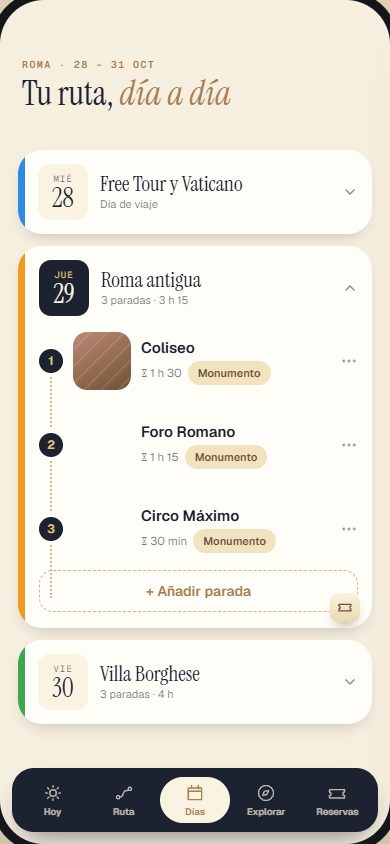
Design · Marca JUTRIP 04
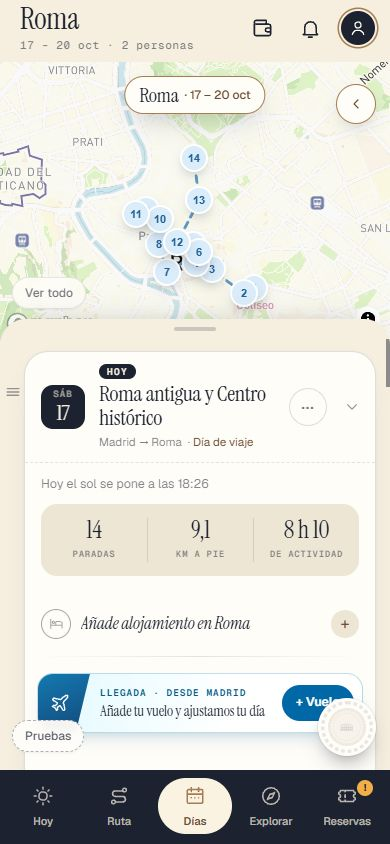
La app · 04_dias_dia_abierto
05 · Explorar
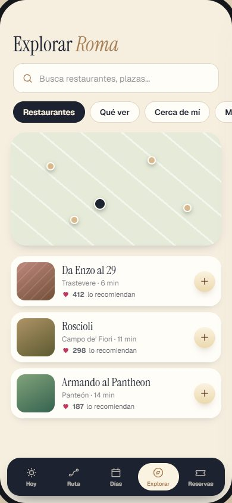
Design · Marca JUTRIP 05
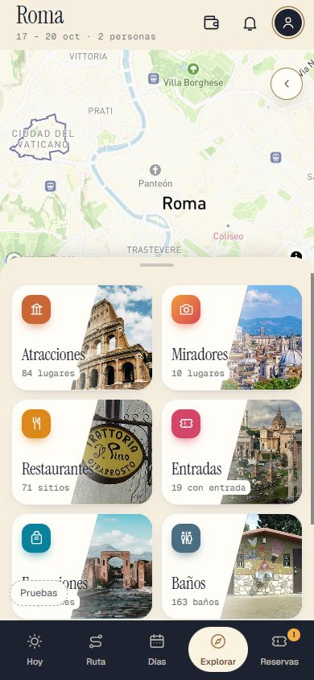
La app · 05_explorar
06 · Reservas
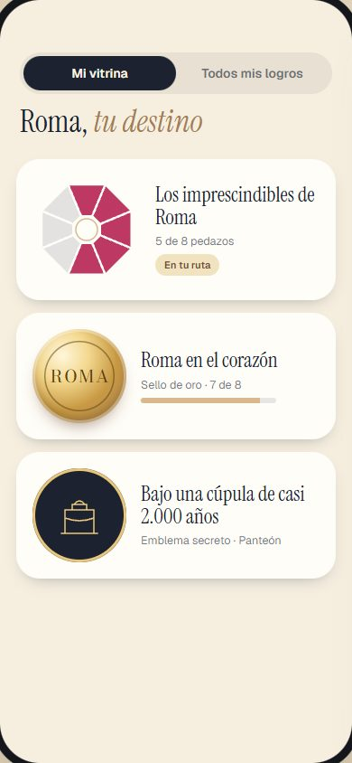
Design · Marca JUTRIP 06
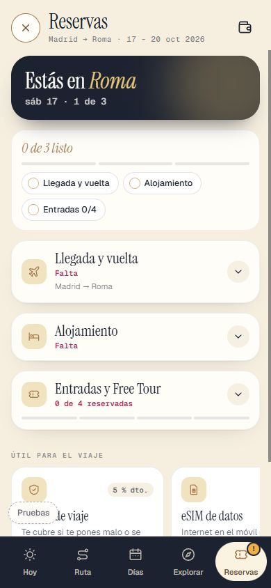
La app · 06a_reservas_cerrada
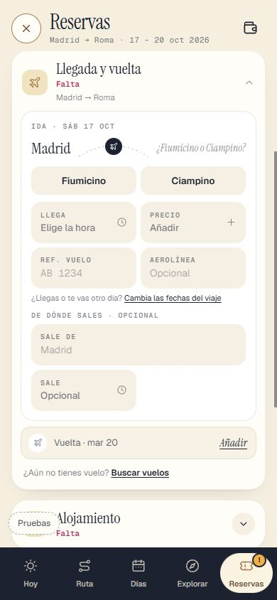
La app · 06b_reservas_acordeon_abierto
07 · Logros: colección y medalla
Los dibujos de las medallas, sellos y emblemas no se tocan (su oro es el del metal).
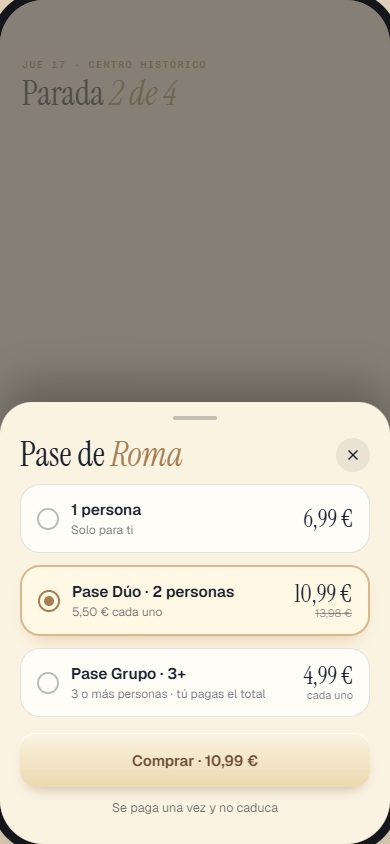
Design · Marca JUTRIP 07
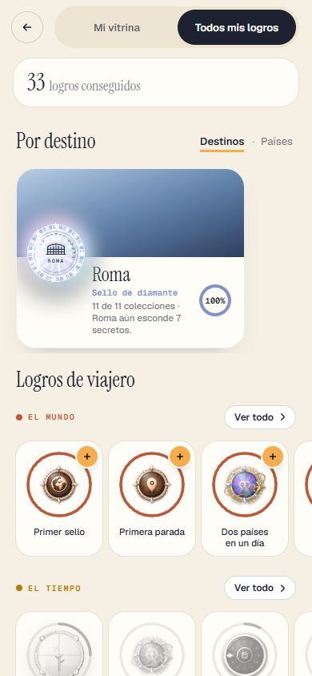
La app · 07_logros
08 · El Pase, pantalla de compra
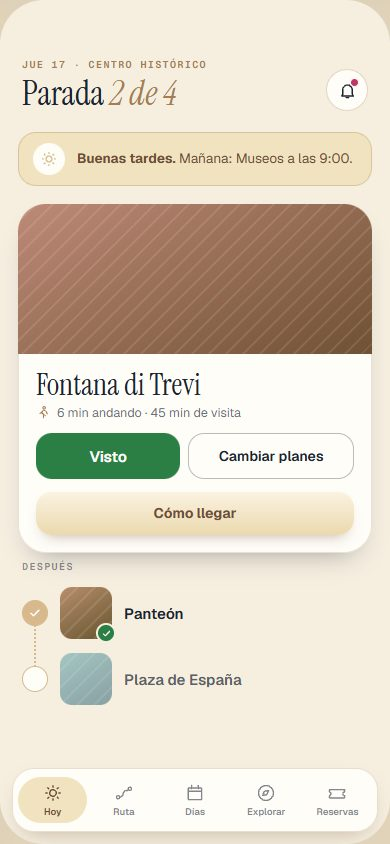
Design · Marca JUTRIP 08
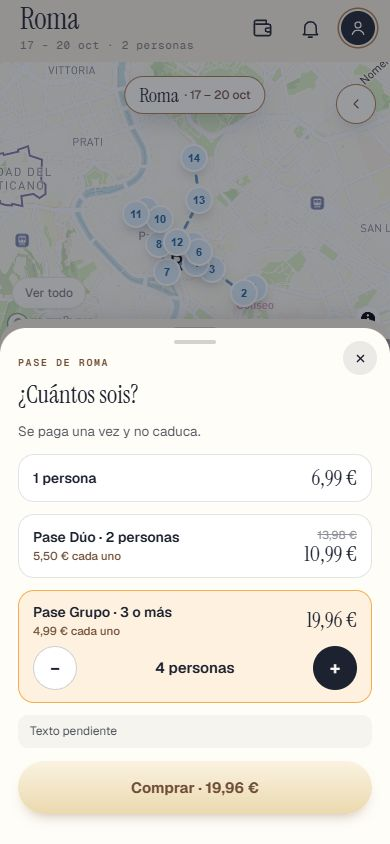
La app · 08_la_hoja_del_pase
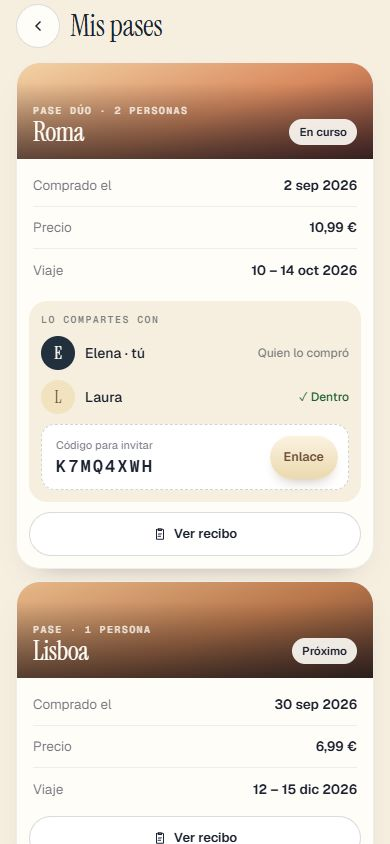
La app · 08b_mis_pases
09 · HOY en modo claro, con la barra marfil
La barra de la app es la A (tinta); Design enseña también la marfil.
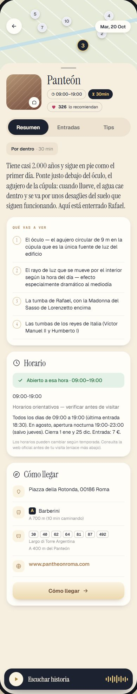
Design · Marca JUTRIP 09La app · 03_hoy
10 · Una parada por dentro
Marca JUTRIP todavía no tiene esta pantalla
Design
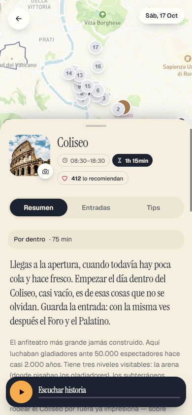
La app · 10_ficha_de_una_parada
— · RUTA (Marca JUTRIP no tiene pantalla de RUTA todavía)
Marca JUTRIP todavía no tiene esta pantalla
Design
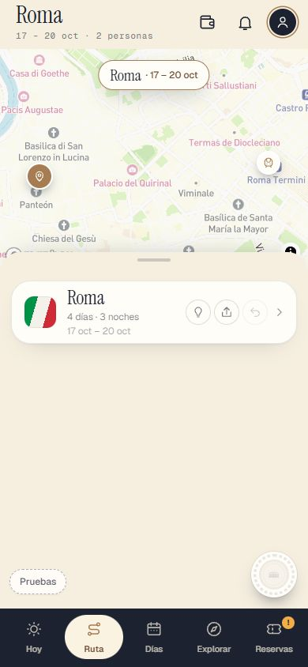
La app · 04a_ruta
— · Crear el viaje, primer paso (Marca JUTRIP no tiene esta pantalla todavía)